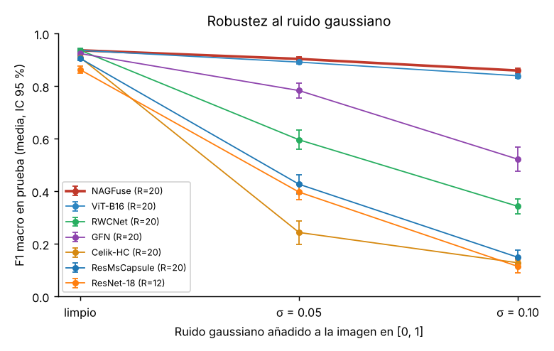
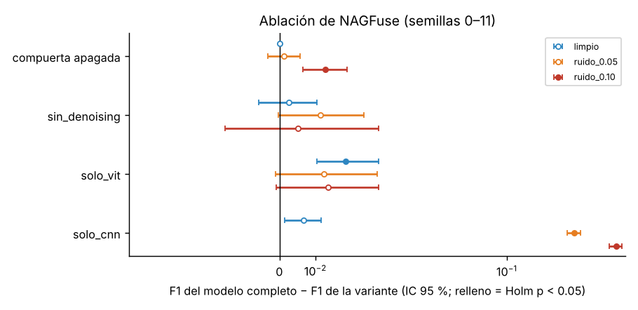
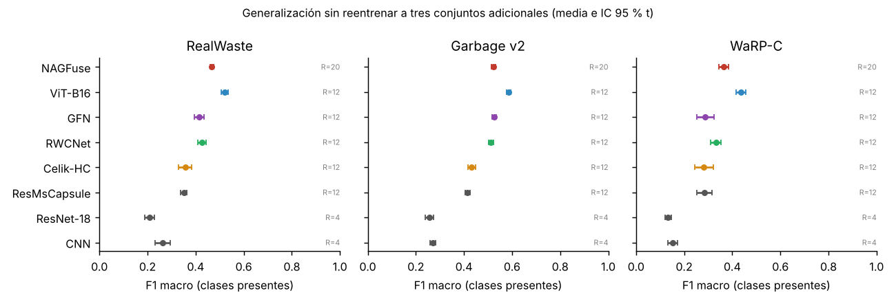

28. Evaluación ampliada#
Note
Las tablas y figuras de este capítulo (robustez, ablación, conformal, calibración y costo con frontera de Pareto) se reproducen con código ejecutable en el cuaderno 28a. Reproducción de la evaluación ampliada.
Todas las cifras salen de la tabla maestra única (entregable3/resultados/tabla_maestra.csv), la misma que lee el dashboard.
28.1 Robustez a perturbaciones#
Perturbaciones del E2 (semilla 2026), aplicadas a la imagen de prueba en \([0, 1]\). Media sobre semillas; R = 20 para los seis primeros modelos y 12 para el resto.
Modelo |
Limpio |
Ruido 0.05 |
Ruido 0.10 |
Desenfoque |
Oclusión |
Fondo sustituido |
ECE |
NLL |
|---|---|---|---|---|---|---|---|---|
NAGFuse |
0.936 |
0.904 |
0.859 |
0.865 |
0.928 |
0.920 |
0.030 |
0.191 |
ViT-B16 |
0.936 |
0.892 |
0.840 |
0.864 |
0.932 |
0.916 |
0.039 |
0.224 |
RWCNet |
0.937 |
0.596 |
0.343 |
0.814 |
0.926 |
0.895 |
0.030 |
0.187 |
GFN |
0.924 |
0.783 |
0.522 |
0.775 |
0.922 |
0.896 |
0.051 |
0.309 |
Celik-HC |
0.909 |
0.243 |
0.128 |
0.728 |
0.892 |
0.869 |
0.057 |
0.381 |
ResMsCapsule |
0.906 |
0.427 |
0.149 |
0.578 |
0.865 |
0.813 |
0.188 |
0.433 |
ResNet-18 |
0.863 |
0.397 |
0.114 |
0.613 |
0.820 |
0.596 |
0.052 |
— |


Fig. 6 F1 macro frente al nivel de ruido (media e IC 95 % t). NAGFuse y ViT-B16 se degradan poco; las CNN caen entre 0.3 y 0.7.#
NAGFuse tiene el mejor o casi el mejor F1 en todas las perturbaciones y la mejor calibración, empatado con RWCNet. Con ruido \(\sigma = 0.10\) su ventaja sobre RWCNet crece de 0.31 a 0.52 (predicción P3).
28.2 Ablación y predicciones del mecanismo#
Familia de 4 contrastes contra el modelo completo, semillas 0–11, Holm sobre el máximo de t y Wilcoxon. La “compuerta apagada” usa las mismas corridas con \(\pi = \pi_0\) fijo; las otras tres variantes se reentrenaron.
Variante |
Limpio |
Ruido 0.05 |
Ruido 0.10 |
|---|---|---|---|
Compuerta apagada |
0.000 |
+0.001 (n.s.) |
+0.013 (\(p_{Holm} = 0.015\)) |
Sin contracción de Haar |
+0.003 (n.s.) |
+0.011 (n.s.) |
+0.005 (n.s.) |
Solo rama ViT |
+0.019 (\(p = 0.010\)) |
+0.012 (n.s.) |
+0.014 (n.s.) |
Solo rama CNN (con Haar) |
+0.007 (n.s.) |
+0.263 (\(p = 0.002\)) |
+0.477 (\(p = 0.002\)) |
Las cifras son F1 del modelo completo menos F1 de la variante.


Fig. 7 Ablación con IC 95 % bootstrap sobre semillas. Punto relleno: significativo con Holm.#
Predicción (declarada antes de los experimentos) |
Resultado |
¿Se cumple? |
|---|---|---|
P1. Apagar la compuerta reduce el F1 con \(\sigma = 0.05\) en al menos \(\delta\) |
Reducción de 0.001, no significativa |
No |
P2. Apagar la compuerta no cambia el F1 limpio en más de 0.005 |
Cambio de 0.000 |
Sí |
P3. La ventaja sobre la mejor CNN crece de \(\sigma = 0.05\) a 0.10 |
De 0.308 a 0.516 sobre RWCNet |
Sí |
P4. \(\hat\sigma\) crece con \(\sigma\) y con \(\sigma = 0.05\) la compuerta se abre del todo en ≥ 95 % de las imágenes |
\(\hat\sigma\): 0.000 / 0.051 / 0.098; \(\pi = 1\) en el 100 % |
Sí |
P5. La contracción de Haar mejora la rama CNN con ruido |
Rama CNN con \(\sigma = 0.05\): 0.625 con Haar frente a 0.216 sin ella (11 semillas) |
Sí |
Lectura.
La compuerta no es la que protege con \(\sigma = 0.05\). P1 falla porque, aun con la compuerta apagada (\(\pi \approx 0.51\)), la mezcla sigue dominada por la rama ViT y la rama CNN ya está protegida por la contracción (0.625 frente a 0.216).
Con \(\sigma = 0.10\) la compuerta sí aporta, 0.013 de forma significativa: la rama CNN cae a 0.38 y conviene descartarla del todo.
El entrenamiento conjunto también importa. La rama ViT dentro de NAGFuse supera a la variante “solo ViT” en limpio (+0.019), y con ruido NAGFuse es igual a su rama ViT (\(\pi = 1\)). La pequeña ventaja sobre ViT-B16 con ruido (+0.012, n.s.) viene, por tanto, de esa rama entrenada con supervisión de la mezcla, no de la compuerta.
La variante sin contracción empata con el modelo completo en limpio y con ruido. Con la compuerta abierta la salida es la rama ViT, así que la contracción solo influye cuando la compuerta está cerrada o a medio abrir.
El mecanismo hace lo que dicen los teoremas (detecta y conmuta), pero su efecto sobre el F1 con \(\sigma = 0.05\) es menor que el previsto.
28.3 Conjuntos adicionales#
Las corridas de los rivales con semillas 0–7 se entrenaron en el E2 sin conservar los pesos, de modo que no se pudieron evaluar en estos conjuntos. Las comparaciones usan las semillas comunes: 8–19 para los rivales de nivel 2 y 8–11 para el resto.


Fig. 8 F1 macro sin reentrenar (clases presentes) en RealWaste, Garbage v2 y WaRP-C.#
Conjunto |
NAGFuse |
ViT-B16 |
RWCNet |
GFN |
Mejor CNN del E1 |
|---|---|---|---|---|---|
RealWaste |
0.462 |
0.520 |
0.426 |
0.415 |
0.263 (CNN) |
Garbage v2 |
0.522 |
0.586 |
0.512 |
0.525 |
0.271 (CNN) |
WaRP-C |
0.364 |
0.436 |
0.332 |
0.288 |
0.152 (CNN) |
NAGFuse es significativamente peor que ViT-B16 en los tres conjuntos (−0.058, −0.064 y −0.072; Holm \(p \le 0.013\)).
Supera a RWCNet en RealWaste (+0.036) y empata con él en Garbage v2 y WaRP-C.
Supera a Celik-HC, ResMsCapsule y GFN en la mayoría de los casos.
El criterio de consistencia entre conjuntos no se cumple. El protocolo pedía mejor media en al menos 2 de 3 y no ser significativamente peor que ningún rival.
Con 4 semillas comunes, la Wilcoxon exacta no puede bajar de \(p = 0.125\), así que los contrastes contra MbXception, FocusRCNet y los modelos del E1 no pueden ser significativos aunque las diferencias superen 0.2.
Explicación probable. La rama EfficientNet-B0 aprendió rasgos más ligados al dominio de TrashNet (fondo blanco, una sola pieza) que la rama ViT. Fuera de ese dominio \(\hat\sigma\) ya no es cero: los fondos texturizados producen coeficientes diagonales grandes. La compuerta puede entonces abrirse o cerrarse por textura y no por ruido; el supuesto (A2) del Teorema 1 deja de cumplirse. Medir \(\pi\) en estos conjuntos es el siguiente paso.
28.4 Calibración y predicción conforme#
Calibración. NAGFuse y RWCNet tienen el menor ECE (0.030), por debajo de ViT-B16 (0.039).
Predicción conforme. Se usó predicción conforme dividida con \(\alpha = 0.10\) (LAC), calibrada en validación y medida en prueba, con 20 semillas por modelo:
Modelo |
Cobertura |
Tamaño medio del conjunto |
Peor clase (cobertura) |
|---|---|---|---|
NAGFuse |
0.879 |
0.90 |
trash (0.763) |
RWCNet |
0.884 |
0.90 |
trash (0.755) |
GFN |
0.883 |
0.91 |
trash (0.737) |
ViT-B16 |
0.872 |
0.89 |
trash (0.700) |
Celik-HC |
0.882 |
0.92 |
trash (0.663) |
Todos quedan algo por debajo de la cobertura nominal de 0.90. Coincide con la diferencia de distribución entre validación y prueba ya documentada en el E2.
La clase trash es la peor cubierta en todos los modelos. NAGFuse tiene la mejor cobertura en esa clase.
El tamaño medio menor que 1 indica que hay conjuntos vacíos. Pasa en las imágenes en que ninguna clase supera el umbral de confianza, y conviene tratarlas como “no sé”.